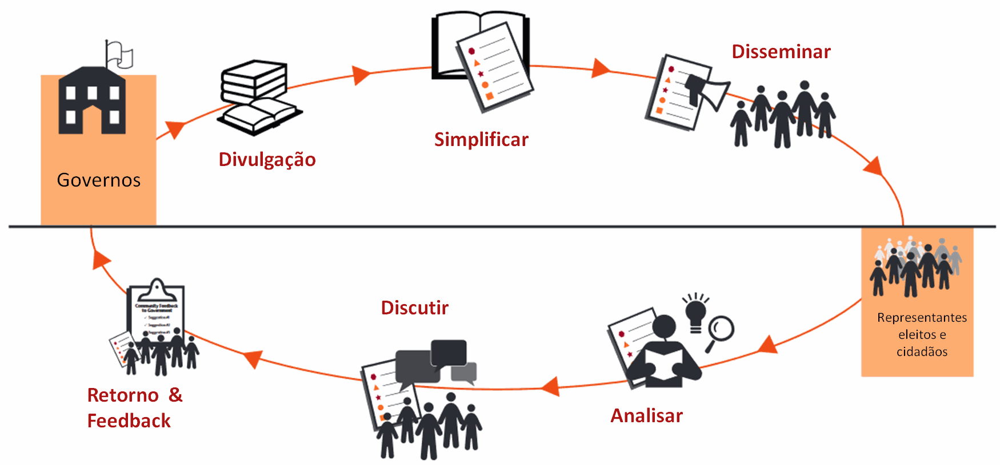

Você já pensou como é importante a comunidade da UNIRIO participar do processo orçamentário? Além de poderem identificar as principais políticas que necessitam de recursos públicos, as pessoas fortalecem sua capacidade de transformar suas demandas em realidade.
Algumas pessoas (alunos, técnicos e professores) querem mais bolsas de pesquisa. Outras desejam creches. Há aquelas que consideram a extensão mais urgente. Umas acham que devemos investir em ensino a distância, outras pensam que devemos investir em tecnologia. Muitas querem criar patentes, outras querem comprar mais remédios. Para outras, é prioritário investir na área social.
Como se pode perceber, os interesses são diferentes e até conflitantes. O que é prioritário para uns pode ser supérfluo para outros. Ao elaborarem o orçamento, os gestores fazem escolhas políticas, isto é, definem as prioridades de governo, que vão muito além de questões locais. Por isso, a sociedade deve ficar atenta às decisões sobre os recursos públicos, intervindo no processo orçamentário para defender suas demandas e propostas.
O orçamento da Universidade é público. Todas as pessoas podem e devem ter acesso a seus números e saber para onde vai o dinheiro.
Quando envio o meu filho para o mercado com 10 reais para comprar algo, eu exijo uma conta do dinheiro que eu lhe dei quando ele retorna para casa. Da mesma forma, quando a Universidade gasta o meu dinheiro, tenho o direito de pedir uma contabilidade dessas despesas. - Diana dos Santos, Mãe
Além de conhecer o conteúdo do orçamento e de se organizar para participar de sua elaboração, a comunidade deve acompanhar sua execução (a aplicação dos recursos).
Esse direito é indispensável para que haja democratização do processo orçamentário, participação da sociedade e controle social. Sem acesso à informação, torna-se impossível monitorar e controlar os gastos públicos.
As bases de dados do orçamento devem estar disponíveis para consulta. Buscamos disponibilizar esses dados, para que cidadãos e cidadãs possam ter conhecimento deles.
Existe dois tipos de despesa em qualquer orçamento público: as obrigatórias e as discricionárias.
Despesas obrigatórias são aquelas previstas em lei, ou seja, representam um gasto vinculado a determinado fim. A maioria dos recursos já está comprometida com essas despesas obrigatórias, como salários dos/as funcionários/as públicos/as; aposentadorias, pensões e benefícios da previdência social;
Despesas discricionárias são aquelas em que o gestor pode aplicar os recursos como quiser. Após as despesas obrigatórias, o recurso que “sobra” para aplicar é motivo de muitas disputas entre interesses diferentes.
Estamos promovendo a transparência orçamentária por meio de uma plataforma de supervisão interativa do orçamento da Unirio.
O ciclo de transparência de acordo com o Banco Mundial pode ser visto na figura abaixo 
Nessa plataforma buscamos prover os atores (alunos, técnicos e professores) da Universidade com informações objetivas sobre o orçamento, de modo a facilitar o controle, a transparência e a tomada de decisão;
O portal da Transparência tem informações sobre o orçamento executado pela UNIRIO em 2016. A fonte desses dados é o SIAFI.
Nesse site temos três abas:
Na primeira aba temos dois tipos de gráficos. Esses dois gráficos são interativos. isso é, podem ser modificados no sidebar “Comandos dos Gráficos”. O primeiro tipo é chamado de Treemap onde o tamanho da área representa o valor gasto em 2016. Já o segundo, permite comparar o valor empenhado, liquidado e pago.
Na segunda aba, podemos visualizar o banco de dados e sua estrutura. Para ver todo o banco de dados é necessário arrastar a barra lateral até o fim. Como é um banco de dados com 108 linhas, podemos arrasta-lo até esse número.
Finalmente, na última aba, apresentamos uma nota explicativa com os principais conceitos do orçamento
público. Nesse item há o glossário explicando o que é um empenho e o que são as categorias de análise
possíveis (por exemplo: o que é o Elemento de despesa).
Referência: Manual de orçamento público “O orçamento público a seu alcance” Instituto de Estudos Socioeconômicos – Brasília : INESC, 2006. 136 p. : il. (Manual de orçamento público)